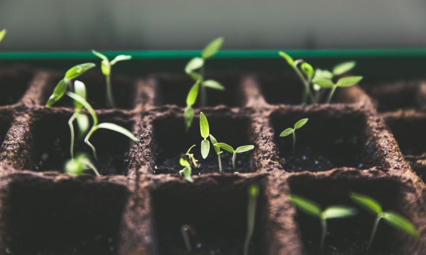
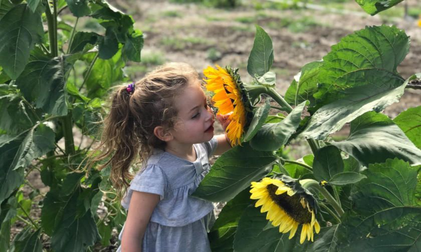

Just a single encounter with the natural world can be a powerful and life-affirming event. Its innate beauty can inform our sense of purpose and significance, as well as capturing our respective imaginations.
With our growing appreciation for the natural world, it’s no wonder that the National Trust recently saw record numbers of visitors in excess of 26.6m .
However, the outdoors aren’t just for adults. They can also play a profound role in the development and positive mental health of children.
Mother Nature Nurtures our Young
In 2016, the University of Derby studied results from the ‘ 30 Days Wild ’ campaign, led by The Wildlife Trusts, which challenged schools to introduce pupils to something nature-related every day for 30 days. The Wildlife Trusts provided 101 examples of things that the children could do, from planting a mini-meadow to following a bumblebee around to see where it led.
“Making nature part of school life can open up new ways of learning and engagement for your pupils”
The Wildlife Trusts website
The results were astounding, demonstrating that children encouraged to interact with the natural world experienced boosts to their self-esteem, creativity, exercise, and confidence in risk-taking. Encouragingly, some children with Attention Deficit Hyperactivity Disorder (ADHD) also expressed positive changes, including an improvement in their concentration and general mood.
Other organisations have been contributing to the cause, including:
However, the concept of promoting outdoor learning in schools is nothing new, and some schools choose to provide it independently.
In 2004, headteacher Tim Baker, of Charlton Manor Primary School, London, sought to better educate pupils about how food was produced and sourced. At the centre of his campaign was the introduction of a new school garden , which not only provided a focal point for the school, but quickly became a catalyst for improvements in many other areas of learning.
“I believed that plenty of subjects could be well taught in a garden, while increasing pupils’ activity levels and encouraging teamwork.”
Tim Baker - Charlton Manor Primary School
Having involvement in the garden incentivised the children to work as a team. They became more focused on tasks, and developed a stronger sense of responsibility, carefully nurturing the plant-life under their charge.  A study conducted by researchers at Clark University in the United States, also discovered a correlation between children’s exposure to green spaces and strides in their cognitive development.
“Exposure to outdoor surrounding greenness was associated with a beneficial impact on cognitive development in schoolchildren… Our observed beneficial associations were consistent for working memory, superior working memory, and inattentiveness.”
Dadvand et al - Clark University
Another way of introducing children to the outdoors, and to enhance their education, is to implement school farms. The School Farms Network has produced a wide range of evidence to support its ethos of outdoor engagement along with a tactile, stimulating, and rewarding approach toanimal husbandryfor juniors.
The initiative, which has boosted the presence of school farms from 66 in 2006 to over 116 today, also has the ardent support of HRH The Prince of Wales.
“The connection with animals, with the soil and with nature can have the most profound impact…For those students who struggle academically, the school farm can often be the lifeline that keeps them in education. Time and again I have seen how those who struggle with books often have a real talent with animals and for gardening.”
HRH The Prince of Wales
Locked Out of the Outdoors?
In light of all the positive evidence and encouraging signs already garnered from outdoor learning research and practise, it seems strange that the aforementioned approaches are not more commonplace.
However, there are significant challenges facing many UK schools, inhibiting the progress of enrichment programs and outdoor learning.
The pressure to accommodate burgeoning numbers of schoolchildren is of utmost concern. With space at a premium, a frugal approach to real-estate management is essential and - sadly - outdoor learning spaces are among the first to be regarded as expendable when weighed against other concerns.
The difficulties that schools are facing regarding real-estate are compounded by profound financial strain. According to the School Cuts Coalition , 91% of schools across England have had their funding cut on a per-pupil basis.
“Schools are in the invidious position of having to decide on the least-worst option of where to make cuts or they will become insolvent."
Geoff Barton - Association of School and College Leaders
In addition, the School Cuts Coalition claim that, over three years, there has been a funding shortfall of over £5.4 billion in regard to school funding. This, the coalition argues, has led to diminished numbers of support staff, lack of adequate equipment and resources, and the inability to properly safeguard children with complex needs.
According to the NASUWT (National Association of Schoolmasters Union of Women Teachers), in some of the most badly affected schools, teachers have resorted to paying for equipment and resources out of their own pockets .
“Teachers once again are being left to pick up the pieces of failed education, social and economic policies.”
Chris Keates - General Secretary of the NASUWT
A Step in the Right Direction
It would appear that, in light of these discouraging circumstances, it would leave outdoor learning with little to bolster its position, but there may well be a glimmer of hope in the recent 25 year plan from DEFRA (Department for Environment, Food & Rural Affairs), entitled ‘A Green Future’.
At £10m (albeit a mere fraction of the £5.4 shortfall highlighted by the School Cuts Coalition) the plan aims to assist primary schools in creating nature-friendly grounds across some 300 schools, including small ponds, gardens and wildflower patches; allowing children to learn about the natural world and encounter local nature first-hand. For many living in urbanised areas, the school grounds may be the only place that they will have the opportunity.
“The £10million boost will help ensure there are no barriers for young people to access the benefits of the natural world and importantly enable them to play their part in environmental protection.”
Michael Gove - Environment Secretary
Acknowledging the positive impact that nature has on mental well-being, the initiative will be run in partnership with - among others - YoungMinds . The organisation campaigns on behalf of children and young adults for better mental-health support, and views the outdoors as an important part of that endeavour. 
A Moral Obligation
If outdoor spaces continue to be acknowledged for their positive affect on mental health, education and personal development, there may yet be hope that those spaces will be preserved and access to them increased.
A commonality shared amongst all of these organisations is their belief that children should have access to the outdoors as a matter of principle: It’s important that all children are guided to the realisation that they have a personal claim to the outdoors, and a responsibility to preserve it.
Introducing children to the outdoors and improving their familiarity with it is a step in the right direction, diminishing the likelihood of disinterest and apathy towards something that - given our current ecological trajectory - will desperately need their support.